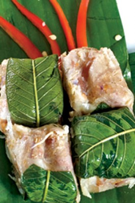
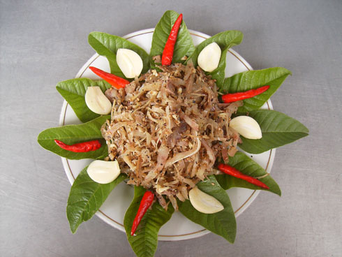

-
Tré bà Đệ
Dân xứ Huế và Quảng Nam, Đà Nẵng có một món ăn rất riêng, được coi là món ăn nhà nghèo nhưng rất được mọi người ưa thích, đó là tré. Ở Đà Nẵng, tré là một thứ dùng để “lai rai”, là món chua, cay đặc sắc mà nếu ai đó đã từng được thưởng thức cùng những người bạn trên xứ Quảng, hẳn sẽ khó lòng nào quên được.
Tré Bà Đệ có các sản phẩm như tré gói cổ truyền, tré gói lá chuối, tré gói lá ổi. Bí quyết làm tré là sau khi mua thịt heo nạc và ba chỉ về cắt mỏng cùng với các loại gia vị như đường, muối, tỏi trộn đều và gói lại. Sau đó ủ từ 2 đến 3 ngày mới đem ra dùng. Để tăng thêm độ hấp dẫn của tré, khi ăn cần cho thêm một ít đu đủ, cà rốt, củ kiệu, đậu phộng, tỏi…và đặc biệt phải ăn kèm tương ớt mới ngon. Tré được dùng như món khai vị trong các dịp lễ tiệc.
Tré là một món ngon, đặc sắc của biết bao thế hệ người dân xứ Quảng, Đà Nẵng. Mà không chỉ có thế, tré đã theo chân những người con quê hương đi qua khắp mọi miền để trở thành món ăn nổi tiếng khắp nơi trên cả nước.
Giá một chục tré loại 350gram gói giấy hay hộp nhựa khoảng 30 nghìn đồng. Tré thẩu lớn khoảng 85 nghìn đồng/thẩu, còn loại nhỏ khoảng 50 nghìn đồng. Ngoài tré ra, tại đây còn có bán nem và chả cũng rất ngon
Chiều tan sở, rủ một vài người bạn nhậu, dăm ba cái tré cộng chút tương ớt thế là đủ cho một buổi tiệc rượu nhâm nhi đến tối. Và dường như đó đã trở thành thói quen, nét đặc trưng văn hóa của người dân xứ Quảng.
